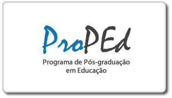
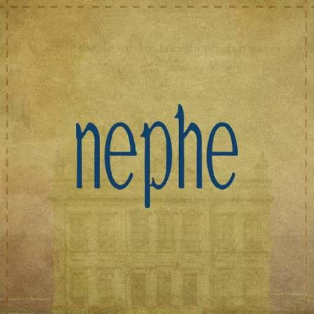

Montessorismo no Brasil · Repositório de fontes hemerográficas
85 autores identificados em periódicos brasileiros (1900–1959) que publicaram sobre o sistema pedagógico de Maria Montessori. As categorias vêm das temáticas atribuídas registro a registro no próprio levantamento hemerográfico; a periodicidade reflete as décadas em que cada publicação foi localizada. Selecione uma categoria e/ou um período para filtrar os sujeitos abaixo: os que correspondem permanecem visíveis e se reúnem no centro, os demais são ocultados. Cada nome traz uma borda na cor de sua década, a mesma cor do período correspondente. Um ponto bordô marca autores com biografia confirmada por fonte externa; bordas bordô marcam quem transita por mais de uma temática. Clique em um nome para ver a nota biográfica, as fontes e as ocorrências completas no levantamento.
Categorias
Periodicidade
Sujeitos


O presente trabalho foi realizado com o apoio do Conselho Nacional de Desenvolvimento Científico e Tecnológico – CNPq (processo nº 150348/2025-8). As informações aqui disponibilizadas referem-se a parte dos resultados da pesquisa de pós-doutorado intitulada «Educar as crianças para uma nova era: circulação e apropriação do pensamento montessoriano no Brasil em confluência com o movimento internacional da educação nova», desenvolvido pelo prof. Dr. Vinicius de Moraes Monção (UFF), no Programa de Pós-Graduação em Educação da UERJ, no Núcleo de Ensino e Pesquisa em História da Educação (NEPHE), sob supervisão do prof. Dr. José Gonçalves Gondra.
Contato: viniciusmoncao@id.uff.br